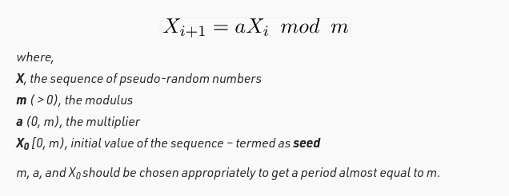

Multiplicative Congruential Method is a type of linear congruential generator for generating pseudorandom numbers in a specific range.
The efficiency of these generators is higher when m is raised to the power of two, so the operation mod becomes trivial.

JavaScript provides us a method to get random numbers: Math.random().
Math.random() returns a random number between 0 (inclusive), and 1 (exclusive).
But, as you already know,
we need six numbers from 1 to 60.
So we adapted our native method to fit in our propose.